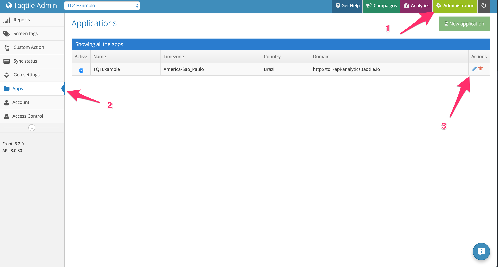
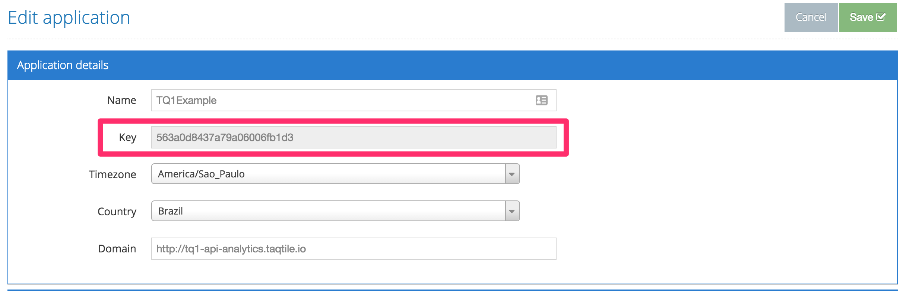
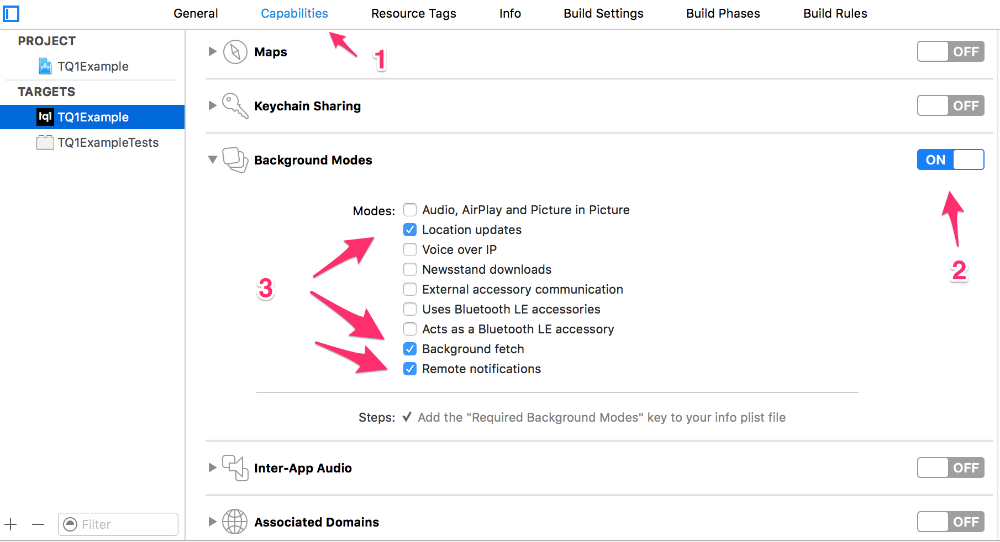

TQ1 Setup
Adding Podfile
In order to use TQ1 SDK, you must add the lib by editing your Podfile.
target :yourTarget do
pod 'TQ1SDK', :git => 'https://github.com/tq1/taqtile-sdk-ios.git', :tag => '3.0.13-no-tracking'
end
After a pod install, the SDK will be ready to use.
Getting your app key
To use TQ1, you will need an app key, that will identify your application on our server. In order to get this app key, you can login to our admin and:
- Go to the
Administrationsection; - Go to the apps menu;
- Click on the edit button for the desired app;
- You will see the information on the
Keyfield.


Enabling remote notifications
Before being able to register for remote notifications and for TQ1 to work correctly, you need to enable it on your app configurations:
- On the app configurations, go to capabilities
- Enable background modes
- Check
Location updates,Background fetchandRemote notifications

Adding TQ1 domain to http exception
Current version of TQ1 uses http to communicate with the server, so, after iOS 9 you need to add an exception in order to complete the requests. Check [here] (https://ste.vn/2015/06/10/configuring-app-transport-security-ios-9-osx-10-11/) for more detailed instructions. The exception added must have the following format:
<key>NSAppTransportSecurity</key>
<dict>
<key>NSExceptionDomains</key>
<dict>
<key>api.analytics.tq1.taqtile.io</key>
<dict>
<key>NSIncludesSubdomains</key>
<true/>
<key>NSTemporaryExceptionAllowsInsecureHTTPLoads</key>
<true/>
</dict>
</dict>
</dict>